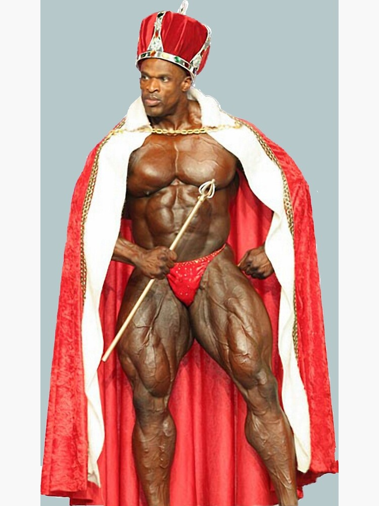
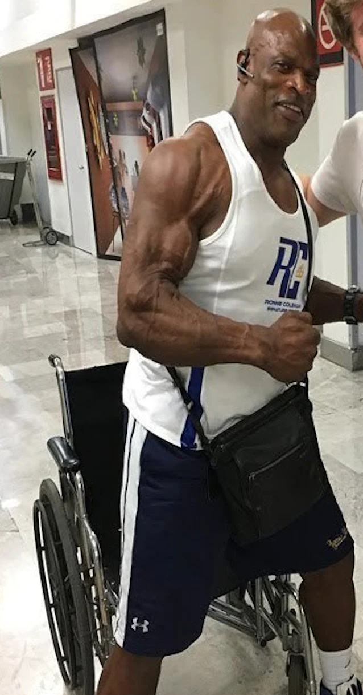
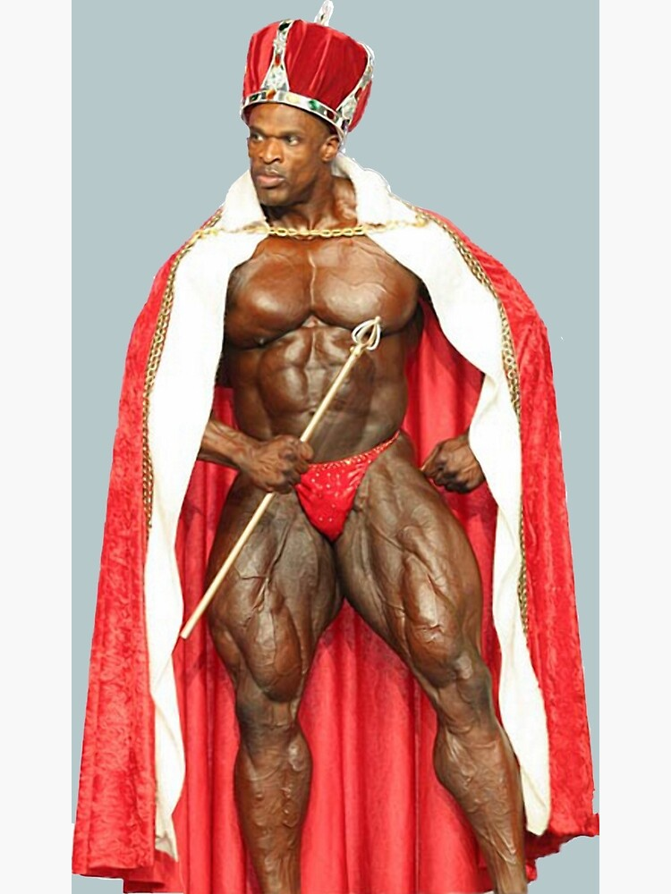
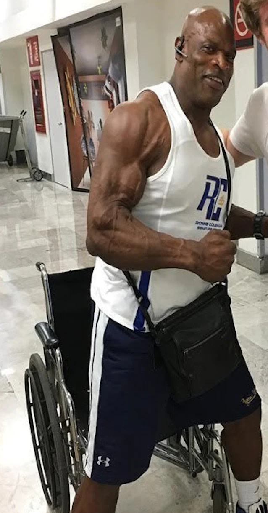

Биография
Роналд Дийн Колман е роден на 19 май 1964 г. в Монро (Луизиана, САЩ). Впоследствие семейството му се мести в съседния Бристъл, където Рони прекарва по-голямата част от детството си. Майката на Рони не е крехка жена, но раждането не минава без проблеми. Дори докторите са удивени от размерите на момченцето, току-що появило се на бял свят. Той е най-възрастният от четирите деца в семейството и най-старшият мъж, тъй като баща им не живее с тях.
 



Постижения
Mr. Olympia 1998 – 1 място; Grand Prix Finland 1998 – 1 място; Mr. Olympia 1999 – 1 място; World Pro Championships 1999 – 1 място; Grand Prix England 1999 – 1 място; Grand Prix England 2000 – 1 място; World Pro Championships 2000 – 1 място; Mr. Olympia 2000 – 1 място; Arnold Schwarzenegger Classic 2001 – 1 място; Mr. Olympia 2001 – 1 място; Mr. Olympia 2002 – 1 място; Mr. Olympia 2003 – 1 място; Grand Prix Russia 2003 – 1 място; Mr. Olympia 2004 – 1 място; Grand Prix England 2004 – 1 място; Grand Prix Russia 2004 – 1 място; Mr. Olympia 2005 – 1 място.1